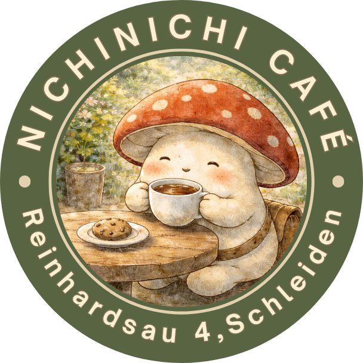

NichiNichi Café-Atelier
Reinhardsau 4 · 53937 Schleiden–Olef
Wie kommst du heute?
Nächste Option
Reinhardsau — direkt beim Café
Ein paar Straßenparkplätze direkt an der Reinhardsau. Wenn einer frei ist, bist du in weniger als einer Minute bei uns.
FußwegUnter 1 Minute
Plätze2–3 Straßenparkplätze
HinweisBegrenzt verfügbar — wer zuerst kommt

Hier parken 🚗
NichiNichi < 1 Min. 🌿
Falls alle Plätze belegt sind: Kein Problem. Die nächsten Optionen sind die Oswald-Matheis-Straße oder In den Weiden — etwa 3–5 Minuten zu Fuß. Unsere Parkkarte auf Instagram zeigt alle Möglichkeiten.
Entspannte Ankunft
Oswald-Matheis-Str., In den Weiden oder Lützenberg
Ruhige Nebenstraßen mit gut verfügbaren Plätzen. In Olef: Oswald-Matheis-Straße oder In den Weiden. In Lützenberg: Bruchheck oder Drosselweg. Von dort läufst du in wenigen Minuten zu uns.
Fußweg3–5 Minuten
PlätzeMehr Verfügbarkeit, weniger Stress
TippWir haben zwei Olef-Spazierkarten — frag uns einfach